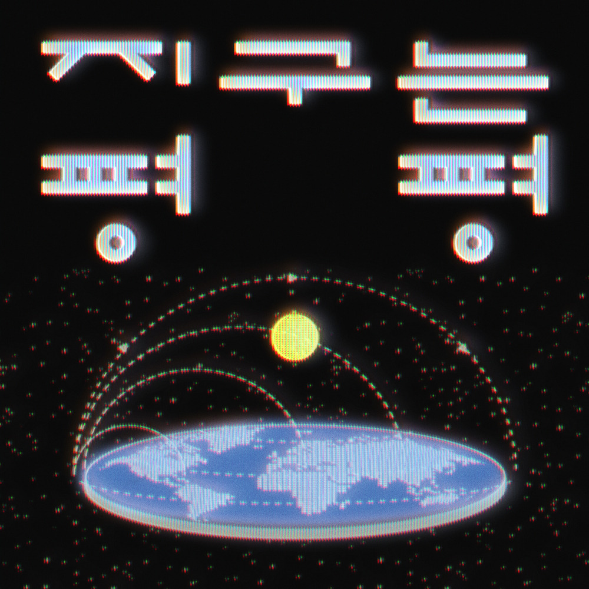

안녕하세요 한스입니다.
오늘은 스텔라장의 최신 싱글 지구는 평평에 대해 이야기해보려고 합니다. 이 곡은 2024년 11월 5일에 발매되었으며, 독특한 제목과 컨셉으로 많은 이들의 관심을 끌고 있습니다. 스텔라장의 지구는 평평은 싱글/EP 형식으로 발매된 댄스/가요 장르의 곡입니다. 이 곡의 재미있는 점은 앨범 소개에서부터 시작됩니다. "지구, 평평한 것으로 밝혀져"라는 문구로 시작하는 앨범 설명은 마치 뉴스 헤드라인을 보는 듯한 느낌을 줍니다.

스텔라장 지구는 평평 MV
이 곡은 "지구가 평평하다는 연구결과가 발표되어 연일 화제"라는 가상의 상황을 바탕으로 하고 있습니다. 이는 우리가 당연하게 여겨온 사실들에 대해 의문을 제기하고, 고정관념을 깨는 메시지를 담고 있는 것으로 보입니다.
스텔라장은 이 곡을 통해 "그동안 둥글다고 믿어온 지구가 사실은 평평할 수도 있다"는 아이디어를 제시합니다. 이는 단순히 지구의 모양에 대한 이야기가 아니라, 우리가 믿고 있는 '진실'에 대해 다시 한 번 생각해보게 만드는 노래입니다.
스텔라장의 음악은 항상 독특한 가사와 멜로디로 주목받아 왔습니다. '지구는 평평'도 예외는 아닙니다. 댄스/가요 장르로 분류되어 있어, 경쾌한 리듬과 함께 스텔라장 특유의 감성적인 보컬이 어우러졌을 것으로 예상됩니다. 스텔라장(Stella Jang)은 한국의 싱어송라이터로, 독특한 음악 스타일과 지적인 가사로 많은 팬들의 사랑을 받고 있습니다. 그녀의 음악은 종종 사회적 이슈나 철학적 질문들을 다루며, 이번 지구는 평평도 그러한 맥락에서 이해할 수 있습니다.
지구는 평평 노래 가사
지구는 평평 (아 진짜?)
고양이 멍멍 (아 진짜?)
어안이 벙벙 (아 진짜?)
뇌 안이 텅텅 (아 진짜?)
증거는 없어 (응응)
출처도 없어 (아 그래)
확실한 거 없어 하나도
그럼 뭐가 있어?
아무거나 들은대로 다 믿어버리면 곤란해
진짜인지 아닌지 뇌를 거쳐야지 사실확인 외않헤
가짜가 많아 BUT 잘 보면 알아
세상을 믿기 전에 It's about time
You gotta 의심 (아 진짜? 정말? Is it true?)
You gotta 의심 (누가 그래? 네가 봤어? 확실해?)
킹리적 갓심 yeah
보이는 게 다가 아닐 수도 있으니
You gotta 의심
자나 깨나 의심
자나 깨나 의심 자나 깨나 의심
불조심도 좋지만 의심
확인해봐 다시 Check again 두 번씩
쉽게 속지 않는 삶의 방식
지구는 평평 하지 않아 둥글어
고양이 멍멍 하지 않아 야옹
어안이 벙벙 해
뇌 안이 텅텅 일 수도 아닐 수도
가짜가 많아 BUT 잘 보면 알아
세상을 믿기 전에 It's about time
You gotta 의심 (아 진짜? 정말? Is it true?)
You gotta 의심 (누가 그래? 네가 봤어? 확실해?)
킹리적 갓심 yeah
보이는 게 다가 아닐 수도 있으니
You gotta 의심
자나 깨나 의심
자나 깨나 의심 자나 깨나 의심
불조심도 좋지만 의심
확인해봐 다시 Check again 두 번씩
쉽게 속지 않는 삶의 방식
자나 깨나 의심 자나 깨나 의심
불조심도 좋지만 의심
확인해봐 다시 Check again 두 번씩
쉽게 속지 않는 삶의 방식
이게 나의 방식
맺음말
스텔라장의 지구는 평평은 단순한 음악 작품을 넘어서, 우리의 고정관념과 믿음에 대해 생각해보게되는 곡입니다. 이 곡은 우리가 당연하게 여기는 것들에 대해 의문을 제기하고, 새로운 시각으로 세상을 바라볼 것을 제안하고 있습니다. 음악을 통해 이러한 메시지를 전달하는 스텔라장의 시도는 매우 흥미롭고 의미 있어 보입니다. 지구는 평평은 단순히 들어서 즐기는 음악을 넘어, 생각할 거리를 던져주는 작품이 될 것 같습니다.
음악은 때로 우리의 고정관념을 깨고 새로운 세계를 보여주는 창문이 되어줍니다. 스텔라장의 지구는 평평'과 함께 여러분만의 새로운 시각을 발견해보시기 바랍니다!